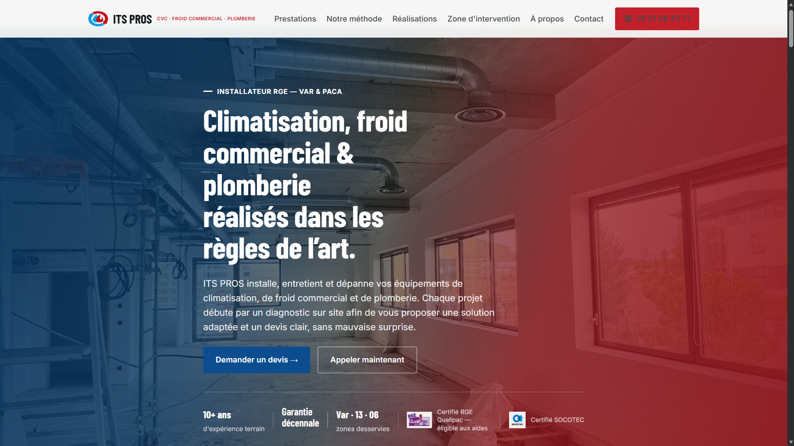

LIVE WEBSITE · ITS PROS01 / CLIENT REDESIGNFRANCE · WEB
ITS PROS
↗A complete redesign for a heating, air-conditioning, and plumbing company. A clearer identity, a working contact path, and a site built to feel at home on any screen.
THE NEED
Bring a local service business online with a more coherent identity and a simpler way to get in touch.
WHAT I BUILT
Full site redesign and rebuild, responsive layouts, contact form, photo gallery, CSP and link sanitization.